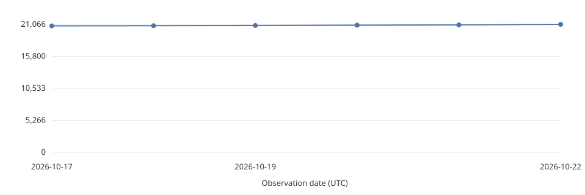
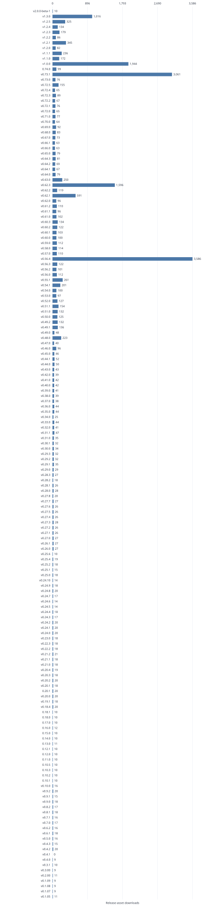

21,470 downloads across 169 published releases, including prereleases. Last observation: 2026-10-29T02:52:15Z.
Downloads count existing GitHub release assets, including binaries, manuals and checksums. Repeated and automated downloads count too; this is not a count of unique users or installations. Git clones and automatically generated source archives are excluded.
Daily UTC observations start on 2026-10-17. Earlier daily counts cannot be recovered. Missing days are gaps. Deleting or replacing release assets can lower the measured total.

Current lifetime counters per release, newest first. Scroll to see all releases.

Source: GitHub release API.